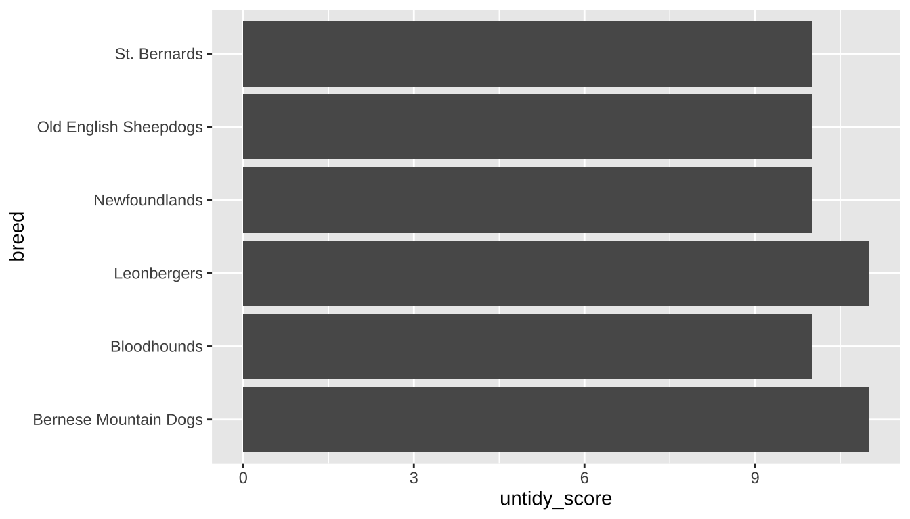
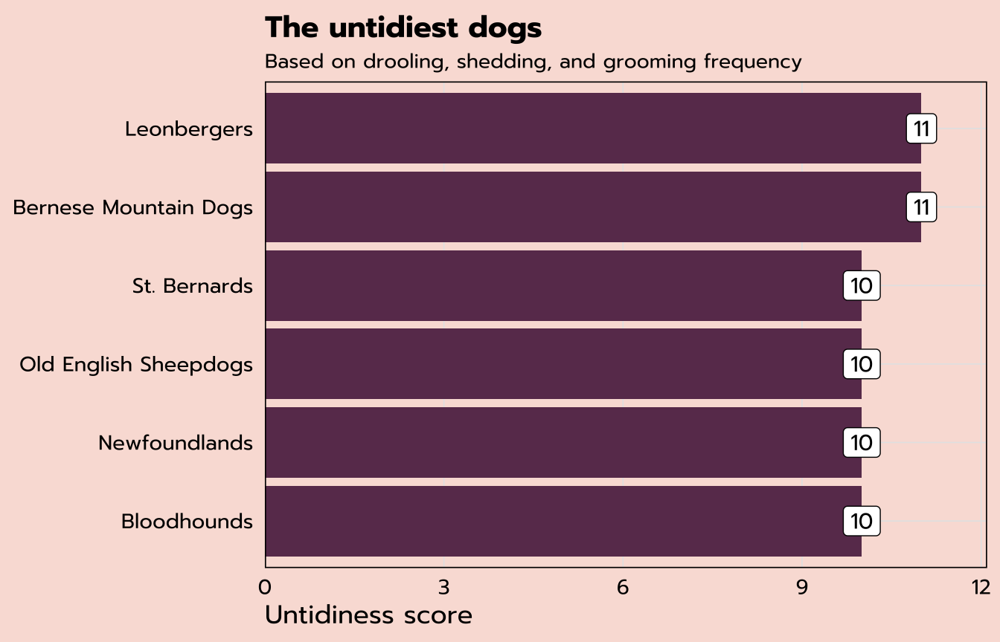
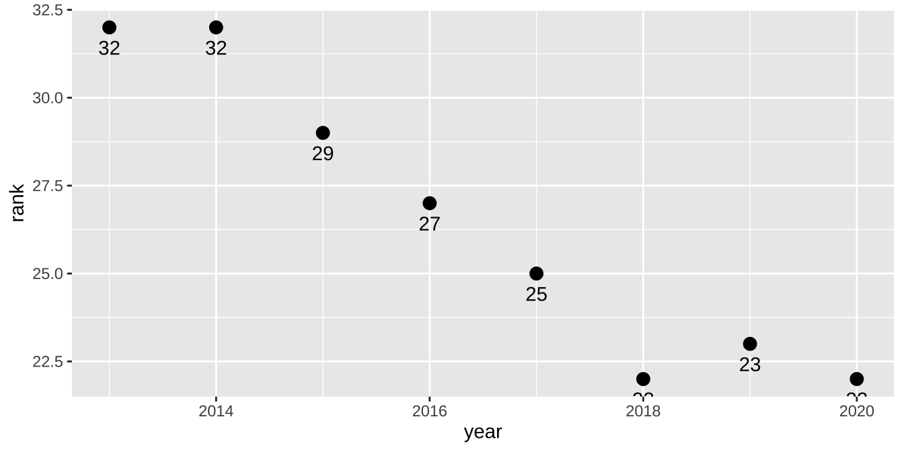
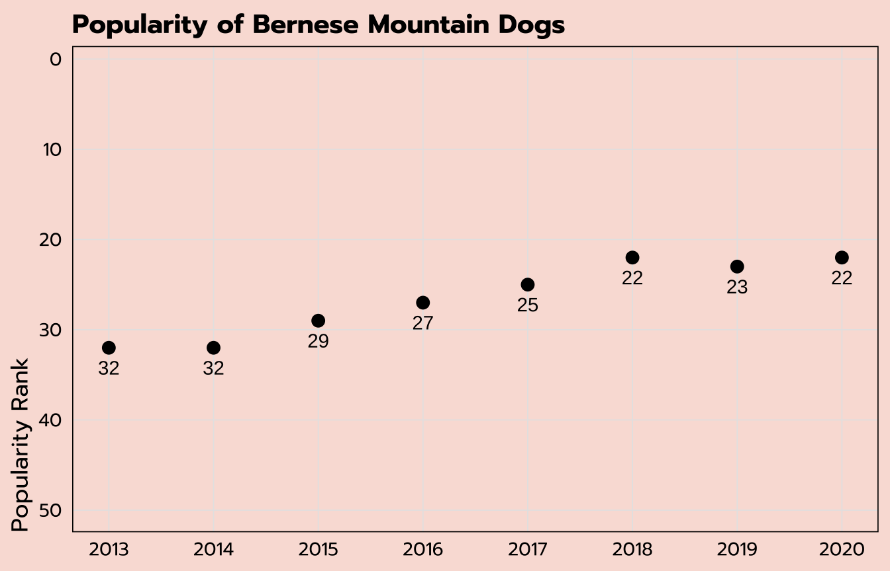
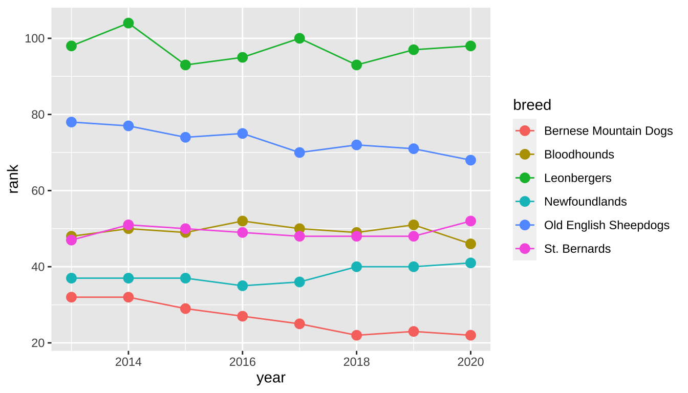
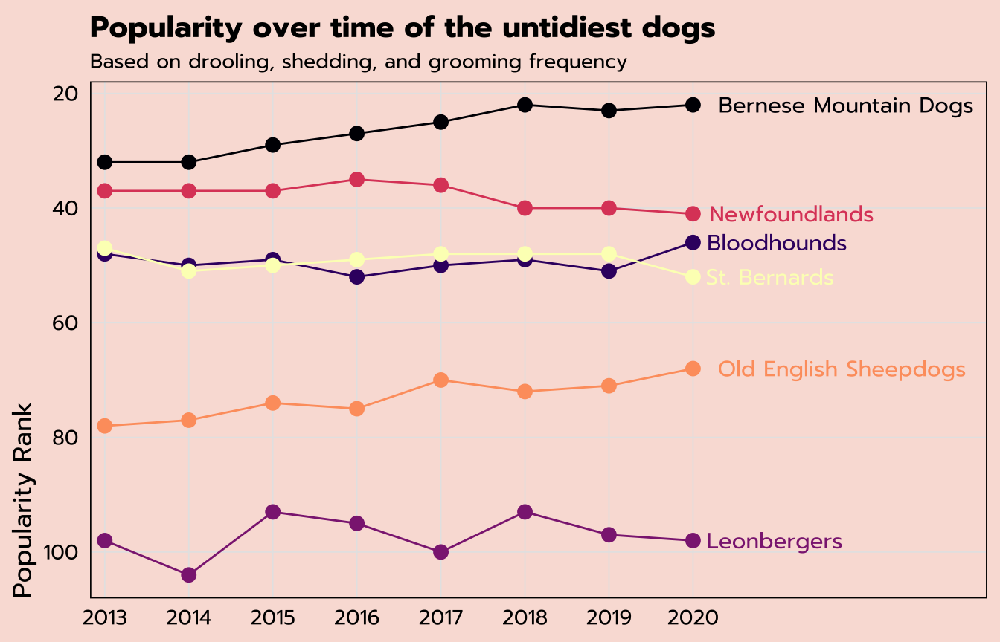
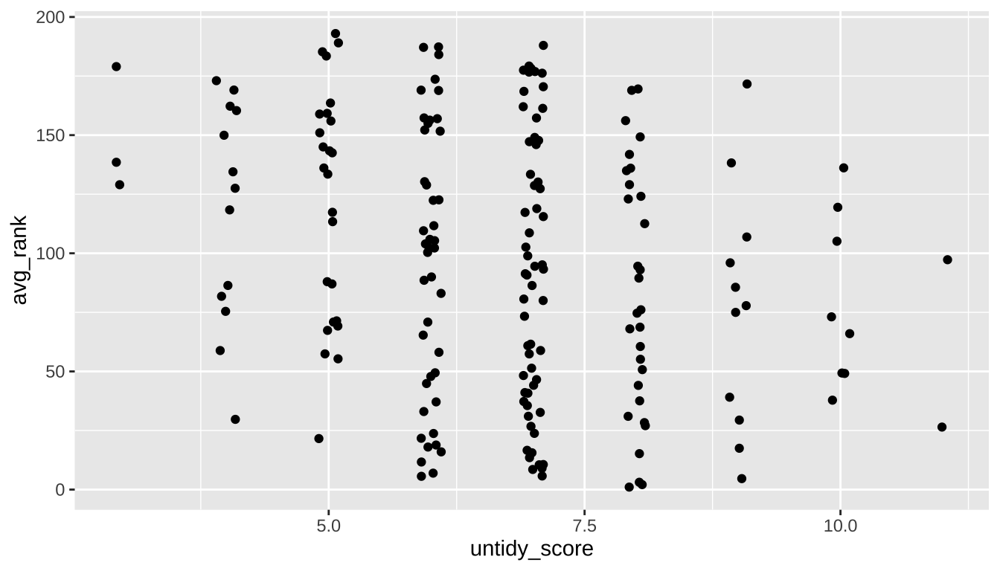
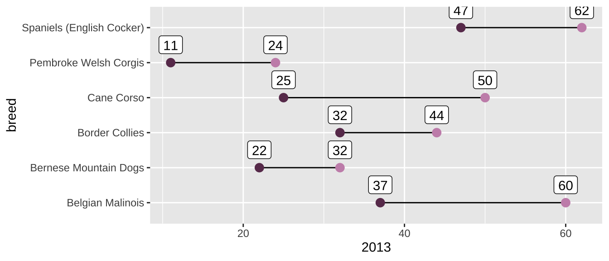
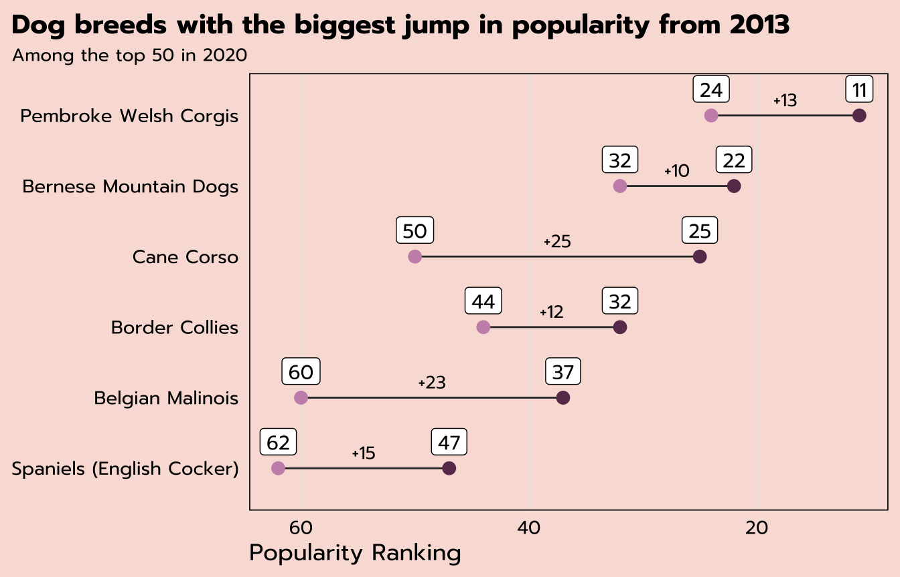

library(tidyverse)
breed_rank <- read_csv("https://raw.githubusercontent.com/meghall06/rladiesparis/master/breed_rank.csv")
breed_traits <- read_csv("https://raw.githubusercontent.com/meghall06/rladiesparis/master/breed_traits.csv")Keeping it Tidy
Using the Tidyverse to Organize, Transform, and Visualize Data
Workshop hosted by Meghan Hall, through R-Ladies Paris
September 8, 2022 | 1pm EST / 7pm CEST
Register now Workshop slides Code file
About the Workshop
This 90-minute workshop is targeted toward beginners/advanced beginners and will serve as an introduction to the tidyverse, a collection of packages designed to aid in the cleaning and wrangling of data. In order to give you the tools to embark upon your own analysis on your own data, we will work through a sample data set and discuss methods for modifying, aggregating, reshaping, and visualizing data.
The event is free and will be held virtually over Zoom, though registration is required!

Technical details
You are free to “code along” throughout the workshop, using the details in the slides and on this page, but you do not have to! All the materials are publicly available, so feel free to just watch and go through the code at your own pace at a later date. Unfortunately, due to time and other logistical constraints of this workshop, there won’t be time for individual troubleshooting.
If you would like to be prepared to code along, please have R and RStudio installed on your computer and make sure that the tidyverse is installed with install.packages("tidyverse").
Website materials
The materials on this website are designed as a companion for the live workshop, not as a comprehensive guide to the entire tidyverse. All the code is here, along with some background on the concepts discussed, but the details are more fleshed out in the workshop itself. The workshop slides are linked above.
The code is interspersed throughout, but the full code.R file is available at the link above.
R and the tidyverse
R is an open-source (that means free!) scripting language for working with data. It helps make your analysis wonderfully efficient and ✨ reproducible ✨, and I would highly recommend it over something like Excel for anything beyond data analysis, especially if you expect to repeat that analysis ever again (which you probably will).
Having a) your data separate from your analysis and b) that analysis codified in a script will help tremendously with reproducibility efforts. That makes it easier for anyone else (including yourself in three months once you have forgotten all the details you swore you’d remember) to rerun your code and make edits, deal with updated data, etc.
Getting started
You need the R language, as well as a place to actually run that R code. I highly recommend RStudio. Both are free to download. There are some basic installation instructions here.
You use R via packages, which hold functions, which are just verbs. filter is an example of a function. The functions we’ll see today take the syntax function(argument). Many functions can take multiple arguments, which are separated by a comma.
(You can also write your own functions, but that is beyond the scope of this workshop. See more here.)
Why the tidyverse?
The tidyverse is an opinionated set of packages that work together and are designed for common data science tasks. (By opinionated, I mean that the packages have some thoughts on how your data should be structured. We’ll discuss the concept of tidy data later on in this workshop.) The packages are well-maintained and beginner-friendly, plus they cover almost all of what any beginner and/or intermediate user needs in order to get started doing some data analysis.
You install packages with the command install.packages("tidyverse") (need to do once per R installation on your computer) and then load them with the command library(tidyverse) (need to do every session; it is convention to put all of the necessary packages at the top of your coding script).
Since the tidyverse is actually a set of packages, the library(tidyverse) command loads nine of them—the eight listed below, in addition to lubridate, which is useful for working with dates (I clearly need to update my packages before I take screenshots!).

We’ll be focusing on the three packages highlighted above, though there are several more packages within the tidyverse family (shown below). You would need to install and load any of those separately.

Common dplyr verbs
dplyr is perhaps the most useful tidyverse package, just due to how often you’ll use its common functions for data manipulation.
filter()keeps or discards rows (aka observations)select()keeps or discards columns (aka variables)arrange()sorts data set by certain variable(s)count()tallies data set by certain variable(s)mutate()creates new variablessummarize()aggregates data
Both mutate() and summarize() can be further modified by the addition of the group_by() function to specify grouping variables. We’ll see examples of all of these during this workshop.
Common operators
<- is the assignment operator, used for assigning objects like data frames (how data sets are commonly stored in R). I like to think of <-, which can be added with the shortcut option - in RStudio, as “save as.”
|> is the pipe, used to chain together multiple lines of code. It automatically sends the output of one line into the input of the next line and makes it much easier to read and write code. The keyboard shortcut is cmd shift m.
You might also be familiar with %>%, which is the original pipe that was native to the tidyverse. The new pipe |> works in base R and is therefore a bit more versatile, but for the purposes of this workshop feel free to use either! I am trying to get familiar with using |> instead of %>%, so that’s what you’ll see here.
Workshop data
The data we’re using for today’s workshop comes from #TidyTuesday, a weekly social data data project based on the tidyverse ecosystem. The GitHub repo hosts many interesting data sets to practice with, and this particular data set comes from the American Kennel Club.
read_csv() from the readr package (loaded as part of the tidyverse!) imports data of multiple file formats, and the two data sets for this workshop can be read in directly from this website’s GitHub repo.
The first data set, breed_rank, lists the popularity rankings over time for 195 different dog breeds (many of the snippets shown throughout are truncated for the purposes of display).
breed_rank
| Breed | 2013 Rank | 2014 Rank | 2015 Rank | 2016 Rank | 2017 Rank | 2018 Rank | 2019 Rank | 2020 Rank |
|---|---|---|---|---|---|---|---|---|
| Retrievers (Labrador) | 1 | 1 | 1 | 1 | 1 | 1 | 1 | 1 |
| French Bulldogs | 11 | 9 | 6 | 6 | 4 | 4 | 4 | 2 |
| German Shepherd Dogs | 2 | 2 | 2 | 2 | 2 | 2 | 2 | 3 |
| Retrievers (Golden) | 3 | 3 | 3 | 3 | 3 | 3 | 3 | 4 |
The second data set, breed_traits, has information on 16 different traits, classified from 1 to 5, for those 195 dog breeds.
breed_traits
| Breed | Affectionate With Family | Good With Young Children | Good With Other Dogs | Shedding Level |
|---|---|---|---|---|
| Retrievers (Labrador) | 5 | 5 | 5 | 4 |
| French Bulldogs | 5 | 5 | 4 | 3 |
| German Shepherd Dogs | 5 | 5 | 3 | 4 |
| Retrievers (Golden) | 5 | 5 | 5 | 4 |
For today’s workshop, since we’ll be learning about tidy data, we’ll investigate some very untidy dogs. To do so, we’ll be specifically focusing on three of these trait variables: shedding level, coat grooming frequency, and drooling level.
Basic data cleaning
Per the tidyverse style guide, variable names should use snake case—lower case with underscores between words. This helps with consistency and readability, but it’s also technically easier, as any variable names that start with numbers and/or have spaces need to be referred to within `back ticks`. It’s easier to refer to a variable with shedding_level instead of `Shedding Level`, and thankfully we have a function to easily rename all of those variables instead of doing it by hand.
Unfortunately…that function does not live within the tidyverse! It’s the only such function we’ll be highlighting during this workshop, but it is so helpful that it has to be included.
In the code below, after we’ve loaded the janitor package, the first line uses the assignment operator <- to “save as” our breed_traits data set. We could give it another name and save it as something else, but for this purpose we’re going to overwrite it. The second line applies the clean_names() function.
library(janitor)
breed_traits <- breed_traits |>
clean_names()The clean_names() function neatly converts all variable names to snake case, as shown below.
| breed | affectionate_with_family | good_with_young_children |
|---|---|---|
| Retrievers (Labrador) | 5 | 5 |
| French Bulldogs | 5 | 5 |
count()
If you want to look at your data, use View(breed_traits) and it will pop up in RStudio in a spreadsheet-like format. But there are ways to programatically look at your data, as well, and one of the most useful functions for doing so is count(). It allows you to count the unique values of a variable (or multiple).
Note that this piece of code does not have an assignment operator! We are applying the count() function to the breed_traits data set, but the results would appear in your console and would not be saved anywhere. This is useful whenever you don’t need to save the output.
breed_traits |>
count(shedding_level)This output tallies up our data by the shedding_level variable. 109 breeds have a value of 3, 41 breeds have a value of 2, etc. Unfortunately, we have a value of zero, and we know that these variables should have a value of 1, 2, 3, 4, or 5. This is likely an error in the data that should be removed.
| shedding_level | n |
|---|---|
| 0 | 1 |
| 1 | 27 |
| 2 | 41 |
| 3 | 109 |
| 4 | 16 |
| 5 | 1 |
filter()
To investigate this further, we can use the filter() function, which keeps or discards observations (rows). Here, the function argument says that we want to keep all records with a shedding_level value of zero (and we know from our count() output above that there should be only one such observation). I’m also adding the select() function (which keeps or discards columns) to keep only our columns of interest.
You can see how, thanks to the pipe |>, we start with our breed_traits data set, apply the filter() function with that input, apply the select() function to the given output, and then the results would be shown in the console.
breed_traits |>
filter(shedding_level == 0) |>
select(breed, shedding_level, coat_grooming_frequency,
drooling_level)There is in fact only one observation matching this criteria—it looks like something is wrong with the record on Plott Hounds, so we should remove them from our data set (even though they’re quite cute).
| breed | shedding_level | coat_grooming_frequency | drooling_level |
|---|---|---|---|
| Plott Hounds | 0 | 0 | 0 |
We can use the filter() function once again to make this change. You’ll notice in the code below that the assignment operator is back, which means we’re making changes to our data set. We’ll overwrite the breed_traits data frame once again and apply a filter() function to keep only the records in which shedding_level does not equal zero (i.e., all but the Plott Hounds observation). The != operator means not equal to.
breed_traits <- breed_traits |>
filter(shedding_level != 0)If you were to once again run breed_traits |> count(shedding_level), you’d see that zero is no longer a value of that variable.
mutate()
I mentioned earlier that the focus of our analysis will be untidy dogs and that we’ll be focusing on three of the traits. Since those traits are classified from 1 to 5 for each breed, with a higher score denoting a higher level of untidiness, we can add up the scores for all three traits to create a new variable.
The code below uses the assignment operator <- again, but this time we’re starting with the breed_traits data frame and creating a new data frame called untidy_scores. The mutate() function creates this new variable, untidy_score, that adds up our three traits of interest, and the select() function keeps only two columns from our original data set.
untidy_scores <- breed_traits |>
mutate(untidy_score = shedding_level +
coat_grooming_frequency + drooling_level) |>
select(breed, untidy_score)Our entire data set now consists of the untidy_score for 194 breeds (we had 195 until we dropped the Plott Hounds).
| breed | untidy_score |
|---|---|
| Retrievers (Labrador) | 8 |
| French Bulldogs | 7 |
| German Shepherd Dogs | 8 |
| Retrievers (Golden) | 8 |
| Bulldogs | 9 |
arrange()
The arrange() function can be useful to quickly sort your data set based on the value of any selected variable(s). arrange() defaults to ascending order, as you can see in the code and output on the left, but you can specify descending order by wrapping the variable name within desc(), as seen in the code on the right.
untidy_scores |>
arrange(untidy_score)| breed | untidy_score |
|---|---|
| American Hairless Terriers | 3 |
| Xoloitzcuintli | 3 |
| Cirnechi dell Etna | 3 |
| Chihuahuas | 4 |
| Whippets | 4 |
| Chinese Crested | 4 |
untidy_scores |>
arrange(desc(untidy_score))| breed | untidy_score |
|---|---|
| Bernese Mountain Dogs | 11 |
| Leonbergers | 11 |
| Newfoundlands | 10 |
| Bloodhounds | 10 |
| St. Bernards | 10 |
| Old English Sheepdogs | 10 |
Bar chart
bonus: custom ggplot theme
library(showtext) # helps with custom fonts
font_add_google("Prompt", "prompt") # load preferred Google fonts
showtext_auto()
theme_tidy_dog <- function () {
theme_linedraw(base_size=13, base_family="prompt") %+replace%
theme(
# justify axis titles
axis.title = element_text(hjust = 0),
# backgrounds to match website
panel.background = element_rect(fill='#F9E0D9', color = NA),
plot.background = element_rect(fill='#F9E0D9', color=NA),
legend.background = element_rect(fill="transparent", color=NA),
legend.key = element_rect(fill="transparent", color=NA),
# I hate axis ticks and lines :shrug:
axis.ticks = element_blank(),
panel.grid.major = element_line(color = "grey90", size = 0.3),
panel.grid.minor = element_blank(),
# make tweaks to the title and subtitle
plot.title = element_text(size = 15, hjust = 0, vjust = 0.5, face = "bold",
margin = margin(b = 0.2, unit = "cm")),
plot.subtitle = element_text(size = 10, hjust = 0, vjust = 0.5,
margin = margin(b = 0.2, unit = "cm")),
)
}Our previous output showed the six untidiest dogs, along with their untidy score. Let’s make a simple bar chart to visualize that data. Our untidy_scores data set we created previously has all 194 breeds, but for this purpose we want to create a new data set, untidy_dogs, with only the six highest scores.
The slice_max function is quite handy for filtering and keeping only the highest values of a certain variable. This function has multiple arguments: the first specifies the variable to filter on (untidy_score), the second specifies the number of observations we want to keep, and the third clarifies our stance on ties (here we’ll just ignore them).
untidy_dogs <- untidy_scores |>
slice_max(untidy_score, n = 6, with_ties = FALSE)We are left with only six observations in this data set, which we can use to make our bar chart.
| breed | untidy_score |
|---|---|
| Bernese Mountain Dogs | 11 |
| Leonbergers | 11 |
| Newfoundlands | 10 |
| Bloodhounds | 10 |
| St. Bernards | 10 |
| Old English Sheepdogs | 10 |
ggplot2 is the tidyverse package used for making plots—gg stands for the grammar of graphics. The base function is ggplot(), and there are many (many, many) associated functions to help construct and customize your plots.
The code for the bar chart below starts with the name of our data frame: untidy_dogs. The ggplot function starts things off by mapping elements to our aesthetic attributes. Here we just have x and y, but you’ll see more later. We only have two variables in this data set, so untidy_score will go on the x-axis and breed will go on the y.
We specify the geometric points with the following line: geom_bar() signifies a bar chart. The stat = "identity" argument is necessary here to communicate that we want the bar lengths to be determined by the variable that we specified. (The standard bar chart just takes a raw count of your data.)
untidy_dogs |>
ggplot(aes(x = untidy_score, y = breed)) +
geom_bar(stat = "identity")
expand for full code
untidy_dogs |>
# can reorder the breeds based on the untidy score
ggplot(aes(x = untidy_score, y = reorder(breed, untidy_score),
label = untidy_score)) +
# fill colors the bars
geom_bar(stat = "identity", fill = "#6A395B") +
# add the data labels
geom_label(family = "prompt") +
# ensure the bars go all the way to the axis line
scale_x_continuous(expand = expansion(mult = c(0, 0.1))) +
labs(title = "The untidiest dogs",
subtitle = "Based on drooling, shedding, and grooming frequency",
x = "Untidiness score", y = NULL) +
theme_tidy_dog()
Tidy data
From the previous section, we know that Bernese Mountain Dogs are among the untidiest of all: they have the highest score of 11. So far we’ve mostly been working with the breed_traits data, but we have a whole other data set, breed_ranks. Can we look at how the popularity ranking of Bernese Mountain Dogs has shifted over time?
| Breed | 2013 Rank | 2014 Rank | 2015 Rank | 2016 Rank | 2017 Rank | 2018 Rank | 2019 Rank | 2020 Rank |
|---|---|---|---|---|---|---|---|---|
| Bernese Mountain Dogs | 32 | 32 | 29 | 27 | 25 | 22 | 23 | 22 |
I am imagining some kind of dot plot, with the year on the x-axis and the ranking on the y-axis. That seems easy enough based on the data that we have above, but if you were to start constructing that plot, you’d pretty quickly run into a road block. What would your first function look like? ggplot(aes(x = ??, y = ??))
We discussed earlier that the tidyverse is opinionated on the topic of tidy data, and this particular question is tricky because this data set does not meet the criteria for tidy data:
There are three interrelated rules which make a dataset tidy:
1. Each variable must have its own column.
2. Each observation must have its own row.
3. Each value must have its own cell.
- R for Data Science
How does breed_ranks violate these rules? We have a year variable, but that variable does not actually exist as such, in its own column. Shown above is one observation, by dog breed. But that “one” observation is actually eight separate observations: the rank in 2013, the rank in 2014, etc. Each observation needs to have its own row.
pivot_longer()
Thankfully, the tidyverse gives us a handy solution from the tidyr package! The current structure of breed_ranks is in a wide format, and we need it to be in a long format. pivot_longer() to the rescue.
The code below uses the assignment operator to create a new data frame called ranks_pivoted based on breed_rank. The pivot_longer() function here has three arguments: the columns we want to pivot (remember we need to use back ticks because these variable names have spaces in them), the name for the new column consisting of the previous column headers, and the name for the new column consisting of the previous column values.
ranks_pivoted <- breed_rank |>
pivot_longer(`2013 Rank`:`2020 Rank`,
names_to = "year",
values_to = "rank")The output is below. This data is now tidy, with each observation (e.g., the rank in 2013) in its own row and separate columns for each variable.
| Breed | year | rank |
|---|---|---|
| Bernese Mountain Dogs | 2013 Rank | 32 |
| Bernese Mountain Dogs | 2014 Rank | 32 |
| Bernese Mountain Dogs | 2015 Rank | 29 |
| Bernese Mountain Dogs | 2016 Rank | 27 |
| Bernese Mountain Dogs | 2017 Rank | 25 |
| Bernese Mountain Dogs | 2018 Rank | 22 |
| Bernese Mountain Dogs | 2019 Rank | 23 |
| Bernese Mountain Dogs | 2020 Rank | 22 |
We can do a bit more cleaning up of this data set. First, the rename() function makes it easy to change the names of variables (the new name comes first, followed by the original)—we can change Breed to breed to match our other data set. And the parse_number() function from readr allows us to pull out the integer from our year column. This is an example of how you can use mutate() to rewrite existing variables in addition to creating new ones.
ranks_pivoted <- ranks_pivoted |>
rename(breed = Breed) |>
mutate(year = parse_number(year))| breed | year | rank |
|---|---|---|
| Bernese Mountain Dogs | 2013 | 32 |
| Bernese Mountain Dogs | 2014 | 32 |
| Bernese Mountain Dogs | 2015 | 29 |
| Bernese Mountain Dogs | 2016 | 27 |
| Bernese Mountain Dogs | 2017 | 25 |
| Bernese Mountain Dogs | 2018 | 22 |
| Bernese Mountain Dogs | 2019 | 23 |
| Bernese Mountain Dogs | 2020 | 22 |
Now that our data is appropriately tidy, we can return to the question from the beginning of this section: how has the popularity ranking of Bernese Mountain Dogs has shifted over time? Since I’m only interested in Bernese Mountain Dogs, and our new ranks_pivoted data frame contains all the breeds, the code below starts with a filter() statement.
I could use filter(breed == "Bernese Mountain Dogs"), but perhaps you don’t want to type all that out. The stringr package (part of the tidyverse) has many functions for dealing with string (text) data, and str_detect() is among the most useful. It returns TRUE or FALSE as to whether the variable you select (the first argument of the function) contains the string you provide (the second argument of the function). This function within a function will filter to only the observations for which our str_detect expression is TRUE.
Our ggplot function assigns year to the x-axis and rank to the y-axis. I’ve also added label = rank to indicate that I also want my rank variable to determine the label. Instead of adding a geom_bar() label like last time, here we’ve added a geom_point layer for dots as well as a geom_text layer to add a label. The vjust argument within that function specifies the desired vertical justification for the labels.
Dot plot
ranks_pivoted |>
filter(str_detect(breed, "Bernese")) |>
ggplot(aes(x = year, y = rank, label = rank)) +
geom_point(size = 3) +
geom_text(vjust = 2)
expand for full code
ranks_pivoted |>
filter(str_detect(breed, "Bernese")) |>
ggplot(aes(x = year, y = rank, label = rank)) +
geom_point(size = 3) +
geom_text(vjust = 2) +
# flip the y-axis
scale_y_reverse(limits = c(50, 1)) +
# specify the breaks on the x-axis
scale_x_continuous(breaks = seq(2013, 2020, 1)) +
labs(x = NULL, y = "Popularity Rank",
title = "Popularity of Bernese Mountain Dogs") +
theme_tidy_dog()
Line graph
In the previous section we plotted the ranking over time for the Bernese Mountain Dogs. Can we do the same for the six untidiest dogs we identified previously in the untidy_dogs data set?
These are the two data sets we have:
untidy_dogs
| breed | untidy_score |
|---|---|
| Bernese Mountain Dogs | 11 |
| Leonbergers | 11 |
| Newfoundlands | 10 |
| Bloodhounds | 10 |
| St. Bernards | 10 |
| Old English Sheepdogs | 10 |
ranks_pivoted
| breed | year | rank |
|---|---|---|
| Retrievers (Labrador) | 2013 | 1 |
| Retrievers (Labrador) | 2014 | 1 |
| Retrievers (Labrador) | 2015 | 1 |
| Retrievers (Labrador) | 2016 | 1 |
| Retrievers (Labrador) | 2017 | 1 |
| Retrievers (Labrador) | 2018 | 1 |
The data we want to plot (the rankings by year) is in the ranks_pivoted data set, but that holds all the dog breeds and we only want to include the six breeds we have in the untidy_dogs data set.
Thankfully, you can also use the filter() function to filter across data sets! The code below creates a new data set untidy_popularity based on the ranks_pivoted data set that keeps only the observations for which the breed is included among the list of breeds within the untidy_dogs data set. There are two more common operators used here: %in% allows for multiple options within a list, and $ refers to a specific variable within another data set.
untidy_popularity <- ranks_pivoted |>
filter(breed %in% untidy_dogs$breed)To check that this filter worked as we wanted it to, we can apply a count() function to our new untidy_popularity data set.
untidy_popularity |>
count(breed)There are six breeds included (correct), with eight separate observations each (one for each year; correct).
| breed | n |
|---|---|
| Bernese Mountain Dogs | 8 |
| Bloodhounds | 8 |
| Leonbergers | 8 |
| Newfoundlands | 8 |
| Old English Sheepdogs | 8 |
| St. Bernards | 8 |
We can create a line graph off of this untidy_popularity data set using the geom_line() function. (I’ve also included a geom_point layer to add points to those lines.) The year variable is on the x-axis with rank on the y-axis, similar to what we’ve used before, but in order to get multiple lines for the multiple breeds, I’ve added the breed variable onto both the group and color aesthetics. This will group the data points by breed and also create a color legend.
untidy_popularity |>
ggplot(aes(x = year, y = rank, group = breed, color = breed)) +
geom_line() +
geom_point(size = 3)
expand for full code
untidy_popularity |>
# create a label that applies for the last point only
mutate(label = ifelse(year == 2020, breed, NA)) |>
ggplot(aes(x = year, y = rank, group = breed, color = breed,
label = label)) +
geom_line() +
geom_point(size = 3) +
# apply the label so I don't have to use a legend
geom_text(hjust = -0.1, family = "prompt") +
# change the color scale
scale_color_viridis_d(option = "A") +
# control the width of the x-axis (so I have room for labels)
# and specify breaks
scale_x_continuous(expand = expansion(mult = c(0.025, 0.5)),
breaks = seq(2013, 2020, 1)) +
# flip the y-axis so better rankings are "higher"
scale_y_reverse() +
labs(title = "Popularity over time of the untidiest dogs",
subtitle = "Based on drooling, shedding, and grooming frequency",
x = NULL,
y = "Popularity Rank") +
theme_tidy_dog() +
# remove the legend since I used labels instead
theme(legend.position = "none")
Relational data
We have data on the untidy_scores for each breed as well as their popularity over time—can we create a scatter plot of the average popularity ranking against the untidy_scores for all breeds?
We already have the untidy_scores, so let’s focus on finding the average popularity ranking. Our ranks_pivoted data set holds that information in a tidy way, but there is one observation per year and we need to find the average per breed.
The group_by()/summarize() combination of dplyr functions allows you to calculate aggregations by a specified group (or multiple!). Here, the code below groups by breed and creates a new variable, avg_rank, within a summarize() function by taking the mean of the existing rank variable.
avg_ranks <- ranks_pivoted |>
group_by(breed) |>
summarize(avg_rank = mean(rank))The first nine rows of our new avg_ranks data set are below. But we have an NA value! This is a quirk of the aggregation calculations available within summarize(). If there is any missing data among the values being summarized, NA will be returned. (From the raw data, you can find out that the American Hairless Terriers were only ranked in 2020.)
| breed | avg_rank |
|---|---|
| Affenpinschers | 147.750 |
| Afghan Hounds | 105.875 |
| Airedale Terriers | 57.375 |
| Akitas | 46.500 |
| Alaskan Malamutes | 58.875 |
| American English Coonhounds | 169.125 |
| American Eskimo Dogs | 118.875 |
| American Foxhounds | 185.250 |
| American Hairless Terriers | NA |
Depending on your data, this could be very useful information! But if you are aware of the missing data and still want to calculate the aggregations irrespective of any possible missing values, add na.rm = TRUE as an additional argument to your aggregations within summarize().
avg_ranks <- ranks_pivoted |>
group_by(breed) |>
summarize(avg_rank = mean(rank, na.rm = TRUE))| breed | avg_rank |
|---|---|
| Affenpinschers | 147.750 |
| Afghan Hounds | 105.875 |
| Airedale Terriers | 57.375 |
| Akitas | 46.500 |
| Alaskan Malamutes | 58.875 |
| American English Coonhounds | 169.125 |
| American Eskimo Dogs | 118.875 |
| American Foxhounds | 185.250 |
| American Hairless Terriers | 129.000 |
We now have all of the data that we need. Our new avg_ranks data set holds the average popularity ranking per breed, and the untidy_scores data set we created earlier holds each breed’s untidy score.
How do we put them together?
avg_ranks
| breed | avg_rank |
|---|---|
| Affenpinschers | 147.750 |
| Afghan Hounds | 105.875 |
| Airedale Terriers | 57.375 |
| Akitas | 46.500 |
| Alaskan Malamutes | 58.875 |
untidy_scores
| breed | untidy_score |
|---|---|
| Retrievers (Labrador) | 8 |
| French Bulldogs | 7 |
| German Shepherd Dogs | 8 |
| Retrievers (Golden) | 8 |
| Bulldogs | 9 |
Relational data—multiple tables of data that share one or more common elements—is extremely common, and it’s worth becoming familiar with the tidyverse functions that allow you to join data tables.
To solve this particular question, we’ll use left_join(), which is a type of mutating join: it matches up observations across tables and moves variables from one to another.
The syntax of this example is fairly simple: we’re starting with the avg_ranks data set we just created and making a new one titled tidy_and_rank. The two arguments to the left_join() function are the name of the data set we want to get information from (untidy_scores) as well as the key, or the variable that connects the two data frames. In this case, it’s breed.
tidy_and_rank <- avg_ranks |>
left_join(untidy_scores, by = "breed")A quick peek at our new tidy_and_rank data set looks okay…
| breed | avg_rank | untidy_score |
|---|---|---|
| Affenpinschers | 147.750 | 7 |
| Afghan Hounds | 105.875 | 6 |
| Airedale Terriers | 57.375 | 5 |
| Akitas | 46.500 | 7 |
| Alaskan Malamutes | 58.875 | 7 |
…but we can use count() again just to make sure that this worked the way we wanted it to.
tidy_and_rank |>
count(untidy_score)And it looks like we have an NA value.
| untidy_score | n |
|---|---|
| 3 | 3 |
| 4 | 13 |
| 5 | 25 |
| 6 | 43 |
| 7 | 59 |
| 8 | 30 |
| 9 | 11 |
| 10 | 8 |
| 11 | 2 |
| NA | 1 |
Let’s further investigate with a simple filter() to see where the issue is. is.na() is a handy function to use within filter() that will return any observations with an NA value for the specified variable.
tidy_and_rank |>
filter(is.na(untidy_score))It’s the darn Plott Hounds again. We removed them from the original breed_traits data set, the basis of untidy_scores, but they were still present in the original breed_ranks data set, which is what this is based on.
| breed | avg_rank | untidy_score |
|---|---|---|
| Plott Hounds | 167 | NA |
This is essentially the opposite of the operation we just did. We are filtering to keep any observations for which untidy_score is not (!) NA.
tidy_and_rank <- tidy_and_rank |>
filter(!is.na(untidy_score))You can run the count() code again if you wish to double-check, but we are good to go.
Jitter plot
You can create a simple scatter plot in ggplot with numeric variables on the x- and y-axes and a geom_point layer. But a case like this, where one of our variables is an interval like untidy_score, sometimes benefits from adding a bit of jitter to help showcase data points that might otherwise overlap in a scatter plot.
That’s possible by using a geom_jitter layer, where the width of the strip can be controlled by the width argument.
tidy_and_rank |>
ggplot(aes(x = untidy_score, y = avg_rank)) +
geom_jitter(width = 0.1)
expand for full code
tidy_and_rank |>
ggplot(aes(x = untidy_score, y = avg_rank)) +
# specify the labels of the x-axis
scale_x_continuous(breaks = seq(3, 11, 1)) +
# control the size, transparency, and color of the points
geom_jitter(size = 3, width = 0.1, alpha = 0.7, color = "#6A395B") +
# flip the y-axis and control the labels
scale_y_reverse(breaks = c(200, 150, 100, 50, 1)) +
labs(title = "Dog breed popularity compared to their untidiness score",
subtitle = "Ranking based on 2013-2020 data; tidy score based on drooling, shedding, grooming frequency",
x = "Untidiness Score",
y = "Average Popularity Rank") +
theme_tidy_dog()
Dumbbell plot
The last question we’ll answer from this data set is: which breeds have had the biggest jump in popularity from 2013 to 2020?
To answer that question, we’re only interested in certain observations from ranks_pivoted, those with a year of 2013 or 2020.
| breed | year | rank |
|---|---|---|
| Retrievers (Labrador) | 2013 | 1 |
| Retrievers (Labrador) | 2014 | 1 |
| Retrievers (Labrador) | 2015 | 1 |
| Retrievers (Labrador) | 2016 | 1 |
| Retrievers (Labrador) | 2017 | 1 |
| Retrievers (Labrador) | 2018 | 1 |
| Retrievers (Labrador) | 2019 | 1 |
| Retrievers (Labrador) | 2020 | 1 |
| French Bulldogs | 2013 | 11 |
All three of the following functions would deliver the same results on this data set:
filter(year %in% c(2013, 2020))filter(year == 2013 | year == 2020)filter(year == min(year) | year == max(year))
The last option ☝️ is the most robust, meaning that it would still deliver the intended result if, say, you got an updated version of this data set with more years of data.
pivot_wider()
The code below creates a new data set rank_change from ranks_pivoted with five different functions applied. After the filter() we discussed above, we would be left with two observations per breed, one for 2013 and 2020. But the desired structure for the dumbbell plot would have one observation per breed so 2013 and 2020 could be plotted separately. That means it’s time to pivot again—but this time in the opposite direction with pivot_wider() instead of pivot_longer().
This pivot_wider() function has two arguments, to determine where the variable names come from and where the values are from. mutate() will give us a new change variable that calculates the difference, and we’ll filter to only those breeds that are ranked within the top 50 in 2020. And lastly, another application of slice_max() will result in the top six breeds with the highest values of change.
rank_change <- ranks_pivoted |>
filter(year == min(year) | year == max(year)) |>
pivot_wider(names_from = "year",
values_from = "rank") |>
mutate(change = `2013` - `2020`) |>
filter(`2020` <= 50) |>
slice_max(change, n = 6)That leaves us with six observations, one per breed, with separate variables for the rank in 2013, the rank in 2020, and the change.
| breed | 2013 | 2020 | change |
|---|---|---|---|
| Cane Corso | 50 | 25 | 25 |
| Belgian Malinois | 60 | 37 | 23 |
| Spaniels (English Cocker) | 62 | 47 | 15 |
| Pembroke Welsh Corgis | 24 | 11 | 13 |
| Border Collies | 44 | 32 | 12 |
| Bernese Mountain Dogs | 32 | 22 | 10 |
We can plot this data with a dumbbell plot, which are useful for showing the change between two points.
We can build these in ggplot by adding multiple geom_ layers. The first ggplot() function will contain only the mapped aesthetics that apply to all the geom_ layers. Here, that’s only breed on the y-axis. Each of the geom_ layers can have their own aesthetics, as well. One geom_point maps the 2013 variable, another maps the 2020 variable, and a geom_segment layer creates the horizontal line that connects the two dots.
rank_change |>
ggplot(aes(y = breed)) +
geom_segment(aes(yend = breed, x = `2013`, xend = `2020`)) +
geom_point(aes(x = `2013`), color = "#c991b8", size = 3) +
geom_point(aes(x = `2020`), color = "#6A395B", size = 3) +
geom_label(aes(x = `2020`, label = `2020`), vjust = -0.5) +
geom_label(aes(x = `2013`, label = `2013`), vjust = -0.5)
expand for full code
rank_change |>
# create a new variable to find the value of the middle
mutate(middle = `2020` + (change / 2)) |>
# order the breeds by their 2020 rank
ggplot(aes(y = reorder(breed, -`2020`))) +
geom_segment(aes(yend = reorder(breed, -`2020`), x = `2013`, xend = `2020`),
color = "grey20") +
geom_point(aes(x = `2013`), color = "#c991b8", size = 3) +
geom_point(aes(x = `2020`), color = "#6A395B", size = 3) +
geom_label(aes(x = `2020`, label = `2020`), family = "prompt", vjust = -0.5) +
geom_label(aes(x = `2013`, label = `2013`), family = "prompt", vjust = -0.5) +
# label the value of the change at the middle of the line
geom_text(aes(x = middle, label = str_c("+", change)), family = "prompt",
vjust = -0.75, size = 3.5) +
# flip the x-axis
scale_x_reverse() +
labs(x = "Popularity Ranking",
y = NULL,
title = "Dog breeds with the biggest jump in popularity from 2013",
subtitle = "Among the top 50 in 2020") +
theme_tidy_dog() +
theme(panel.grid.major.y = element_blank(),
plot.title.position = "plot")
Resources
I hope this workshop has been a helpful introduction to the tidyverse. (If you found it useful and/or you think someone else would find it useful, I’d appreciate a Twitter share—I’m @MeghanMHall!) But this intro just scratches the surface! It is a very powerful set of packages that can help you solve lots of problems. These are some of my favorite resources: